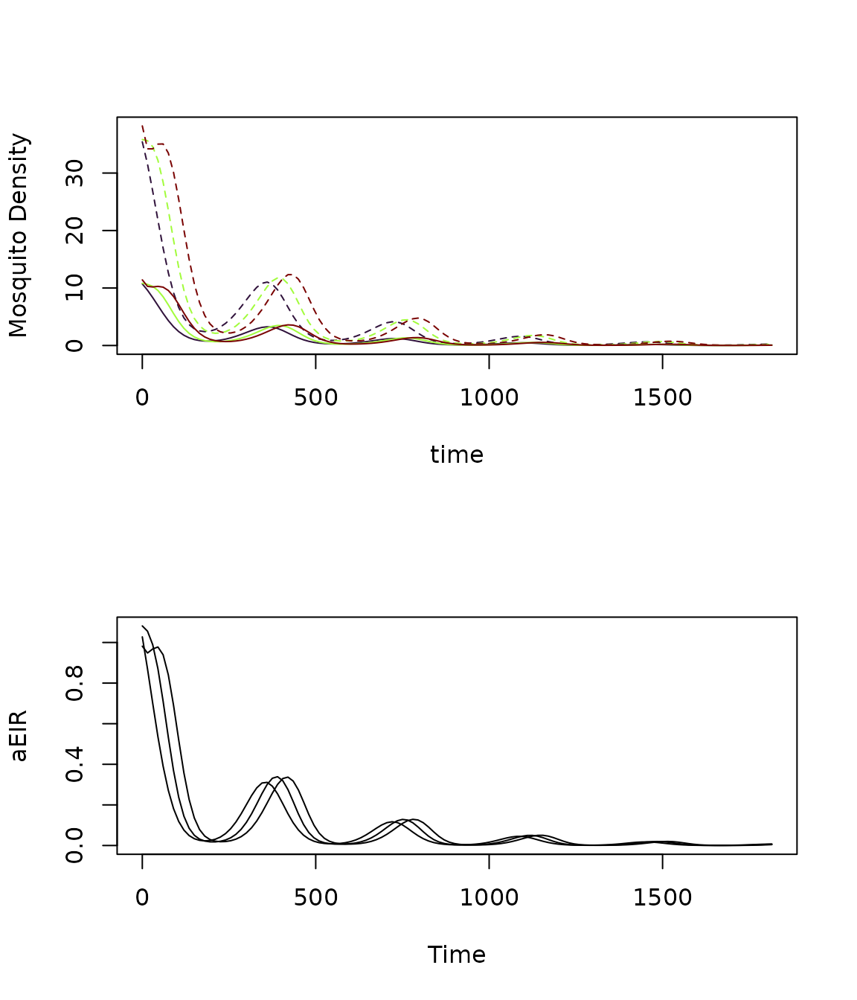

In this vignette we demonstrate how to set up a model incorporating the Le Menach model of ITN based vector control (see this paper). We use the Ross-Macdonald model of adult mosquito dynamics, the SIS model of human population dynamics, and the basic competition model of aquatic mosquito dynamics to fill the dynamical components \(\mathcal{M}, \mathcal{X}, \mathcal{L}\).
Parameters
This case study will use a simple model with 3 patches, 3 population strata, and 3 aquatic habitats. As usual, we set up parameter values and compute the values of state variables at equilibrium. As part of the equilibrium calculation we must compute \(\Upsilon(0) = \exp\left(-\int_{-\tau}^{0} \Omega(s) ds \right)\); the value of the integrated mosquito demography matrix at the initial time point. To simplify things, we simply assume that conditions were constant prior to \(t=0\) so that \(\Upsilon(0) = e^{-\Omega\tau}\).
nPatches <- 3
nStrata <- nPatches
nHabitats <- nPatches
residence <- c(1:nStrata)
membership <- c(1:3)
HPop <- rpois(n = nPatches, lambda = 1000)
# human parameters
b <- 0.55
c <- 0.15
r <- 1/200
Xo = list(b=b,c=c,r=r)
wf <- rep(1, nStrata)
pfpr <- runif(n = nStrata, min = 0.25, max = 0.35)
X <- rbinom(n = nStrata, size = HPop, prob = pfpr)
searchWtsH = rep(1,3)
TaR <- matrix(
data = c(
0.9, 0.05, 0.05,
0.05, 0.9, 0.05,
0.05, 0.05, 0.9
), nrow = nStrata, ncol = nPatches, byrow = T
)
TaR <- t(TaR)
f <- rep(0.3, nPatches)
q <- rep(0.9, nPatches)
g <- rep(1/10, nPatches)
mu <- rep(0, nPatches)
sigma <- rep(1/100, nPatches)
nu <- rep(1/2, nPatches)
eggsPerBatch <- 30
eip <- 11
MYo = list(f=f, q=q, g=g, sigma=sigma, mu=mu,
nu=nu, eggsPerBatch=eggsPerBatch, eip=eip)
K_matrix = make_K_matrix_herethere(nPatches)
K_matrix## [,1] [,2] [,3]
## [1,] 0.0 0.5 0.5
## [2,] 0.5 0.0 0.5
## [3,] 0.5 0.5 0.0Equilibrium
Now we compute the equilibrium conditions for the adult mosquitoes and human populations, such that the PfPR in the human population would be maintained at the input levels if conditions were unchanging.
# derived EIR to sustain equilibrium pfpr
EIR <- diag(1/b, nStrata) %*% ((r*X) / (HPop - X))
# ambient pop
W <- TaR %*% HPop
# biting distribution matrix
beta <- diag(wf) %*% t(TaR) %*% diag(1/as.vector(W), nPatches)
# kappa
kappa <- t(beta) %*% (X*c)
Omega <- make_Omega_xde(g, sigma, mu, K_matrix)
Omega_inv <- solve(Omega)
Upsilon <- expm::expm(-Omega * eip)
Upsilon_inv <- expm::expm(Omega * eip)
# equilibrium solutions
Z <- diag(1/(f*q), nPatches) %*% ginv(beta) %*% EIR
MY <- diag(1/as.vector(f*q*kappa), nPatches) %*% Upsilon_inv %*% Omega %*% Z
Y <- Omega_inv %*% (diag(as.vector(f*q*kappa), nPatches) %*% MY)
M <- MY + Y
P <- solve(diag(f, nPatches) + Omega) %*% diag(f, nPatches) %*% M
Lambda <- Omega %*% MGiven the equilibrium value of \(\Lambda\) required to sustain mosquito populations at such a level sufficient to maintain transmission at that level of PfPR, as well as values for \(\psi\) (maturation rate) and \(\phi\) (density independent mortality), we compute equilibrium values of \(L\) (aquatic mosquito density) and \(\theta\) (density dependent mortality).
# aquatic habitat membership matrix (assume 1 habitat per patch)
calN <- matrix(0, nPatches, nHabitats)
diag(calN) <- 1
# egg dispersal matrix (assume 1 habitat per patch)
calU <- matrix(0, nHabitats, nPatches)
diag(calU) <- 1
psi <- 1/10
phi <- 1/12
eta <- as.vector(calU %*% (M * nu * eggsPerBatch))
alpha <- as.vector(solve(calN) %*% Lambda)
L <- alpha/psi
theta <- (eta - psi*L - phi*L)/(L^2)Setup
Now that all state variables have been solved at equilibrium, we can set up the parameters and components of the system.
We use the null model of human demographic dynamics, which assumes \(H\) is constant for all time.
# adult mosquito parameters
Lo = list(psi=psi, phi=phi, theta=theta, L=L)
MYo = list(f=f, q=q, g=g, sigma=sigma,
nu=nu, eggsPerBatch=eggsPerBatch,
M=M, Y=Y, Z=Z)
xds_setup(MYname="SI", Xname="SIS", Lname="basicL",
nPatches=3, HPop=HPop, membership=membership,
MYoptions=MYo, K_matrix=K_matrix,
XHoptions=Xo, residence=1:3, searchB=rep(1,3),
TimeSpent =TaR, searchQ=rep(1,3), Loptions=Lo) -> itn_mod
itn_mod <- xds_solve(itn_mod, Tmax=1830, dt=15)
itn_mod <- last_to_inits(itn_mod)
cov_options <- list(
mean = 0.3,
season_par = makepar_F_sin(phase = c(150, 190, 230), N=3)
)
itn_mod <- setup_bednets(itn_mod,
coverage_name = "func",
coverage_opts = cov_options,
contact_name = "linear",
contact_opts = list(cp=1),
effect_sizes_name = "lemenach")If we ran the model at this point, we would get the baseline.
Instead, we set up a time-varying function to compute the coverage of
ITNs at any time point. We use a sine curve with a period of 365 days
which goes from 0 to 1 over that period, with the phase shifted so that
at 0 it returns 0. The function also returns 0 for any \(t<0\). This must be a function that
takes a single argument t (time) and returns a scalar
value. We note that this seasonality function exceeds one. When we
evaluate it, values get chopped.
tt = seq(0, 1825, by =5)
show_bednet_coverage(tt, itn_mod) We use the null model of human demographic dynamics, which assumes \(H\) is constant for all time.
xds_solve(itn_mod, 1825, 15) -> itn_mod
par(mfrow = c(2,1))
xds_plot_Y(itn_mod, clrs=turbo(3), llty=2)
xds_plot_Z(itn_mod, clrs=turbo(3), add=T)
xds_plot_EIR(itn_mod)
xds_plot_PR(itn_mod)